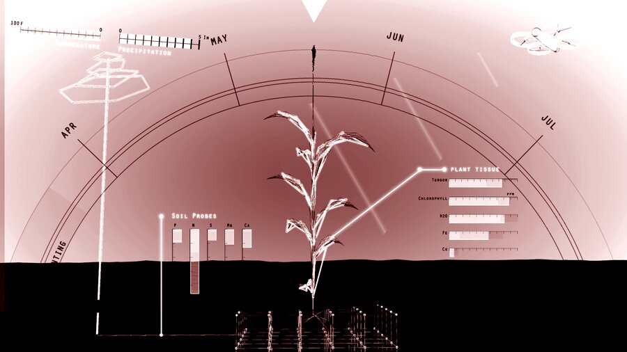
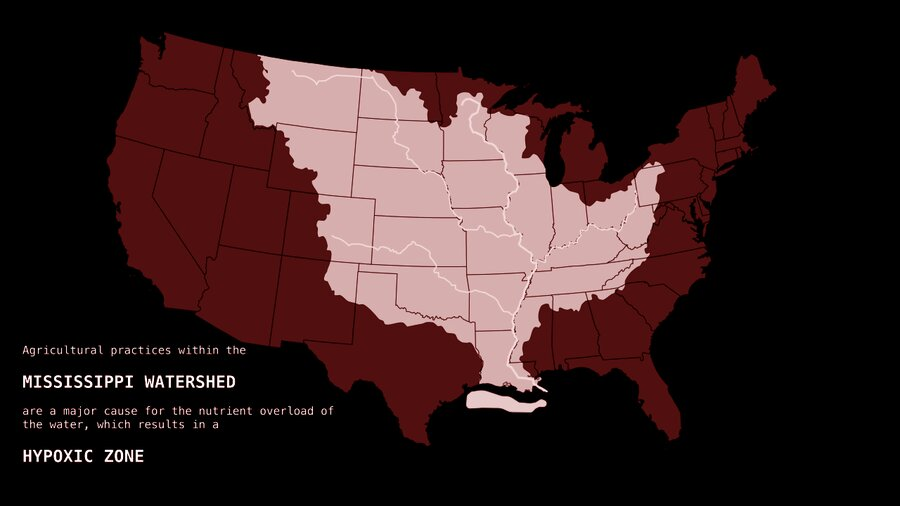
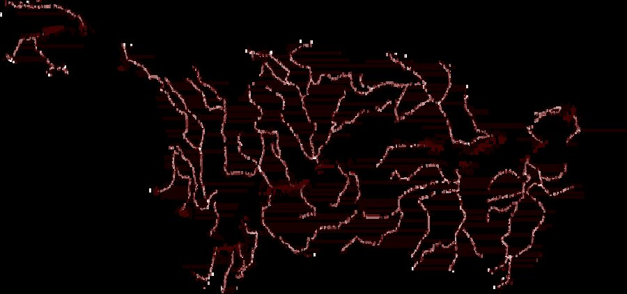

Sensing · Ecology · Infrastructure
The interface between the constructed environment and ecological systems requires a blurring of strategies to address nascent forms of urbanism, biological engineering, and technological interface. These strategies encourage the application of responsive technologies, to form new relationships through sensing and feedback, and therefore developing novel ecological systems. These novel forms of ecology demand a deconstruction of current forms of settlement, infrastructure, and biological systems to understand the constructed landscape as a synthesizer of biotic and abiotic processes. The interstices of these new relationships become the medium in which the course examines new potentials for sensing, monitoring, and automation as a starting point to propose new hydrological, coastal, and riverine infrastructures. These methodologies span a range of scales, from micro adjustments within processes to regional management and monitoring to global remote sensing systems.“Responsive technologies create an applied, recursive or iterative relationship between computation and biology.”



About the seminar
The course focuses on a primary method of inquiry that unpacks coastal and riverine infrastructures through the lens of what Levi Bryant calls an alien phenomenology. This refers to a mode of sensing through objects (machines) and identifies the connections between these actors. The identified connections become the framework for an onto-cartography — a mapping of the interconnections between multiple actors performing in nested and networked relationships — which is continually referenced and modified to test methods of sensing and feedback through media, mockups, and/or prototypes.
Faculty: Bradley Cantrell, Associate Professor of Landscape Architectural Technology. Briefs prepared with: Justine Holzman, Assistant Professor, University of Toronto. Meeting: Monday 8:30–11:30, Gund Hall Gropius + 7 Sumner B2. Office hours: Tuesday 9:00–12:00, Gund Hall 302, bcantrell@gsd.harvard.edu.
This page documents the Spring 2017 iteration of GSD 6353 at the Harvard University Graduate School of Design.